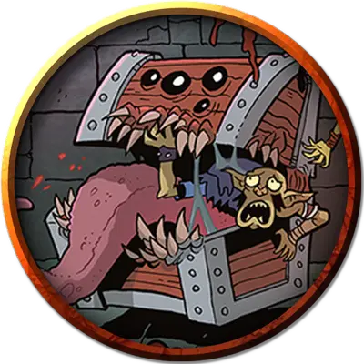

Большой мимик
Large Mimic
Большой Монстр (Перевертыш), нейтральный

Класс Доспеха 12 (природный доспех)
Хиты 75 (9к8 + 35)
Скорость 15 футов
| мод | спас | ||
|---|---|---|---|
| СИЛ | 17 | +3 | +3 |
| ЛОВ | 12 | +1 | +1 |
| ТЕЛ | 15 | +2 | +2 |
| мод | спас | ||
|---|---|---|---|
| ИНТ | 5 | −3 | −3 |
| МДР | 13 | +1 | +1 |
| ХАР | 8 | −1 | −1 |
Навыки Скрытность +5
Иммунитет к урону кислота
Иммунитет к состояниям сбивание с ног
Чувства тёмное зрение 60 футов, пассивное Восприятие 11
Опасность 3 (700 опыта)
Бонус мастерства +2
Особенности
Существо с точно таким же названием присутствует и в другой книге D&D 5-й редакции, и блок статистики этого существа отличен. Если вы искали это существо намеренно, вы могли по ошибке найти не то, что вам было нужно. Ссылка на аналог:
Большой мимик [large Mimic] (WDMM)
— Господин Финик.
Перевертыш. Мимик может действием превратиться в любой предмет, или принять свой истинный, бесформенный облик. Во всех обликах его характеристики остаются теми же самыми. Все несомое и носимое им снаряжение не превращается. Он принимает свой истинный облик, если умирает.
Клейкий (только в облике предмета). Мимик приклеивается ко всему, что его касается. Существо с размером не больше Огромного, к которому приклеился мимик, становится схваченным им (Сл высвобождения 13). Проверки характеристик для высвобождения из этого захвата совершаются с помехой.
Обманчивая внешность (только в облике предмета). Пока мимик остается без движения, он неотличим от обычного предмета.
Борец. Мимик совершает с преимуществом броски атаки по всем существам, схваченным им.
Действия
Мультиатака. Мимик совершает три атаки: две Ложноножками и одну Укусом.
Ложноножка. Рукопашная атака оружием: +5 к попаданию, досягаемость 5 футов, одна цель. Попадание: 7 (1к8 + 3) дробящего урона. Если мимик находится в облике предмета, цель попадает под действие его особенности Клейкий.
Укус. Рукопашная атака оружием: +5 к попаданию, досягаемость 5 футов, одна цель. Попадание: 7 (1к8 + 3) колющего урона плюс 4 (1к8) урона кислотой.